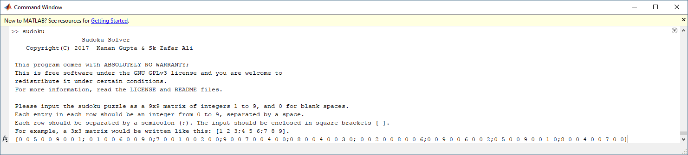
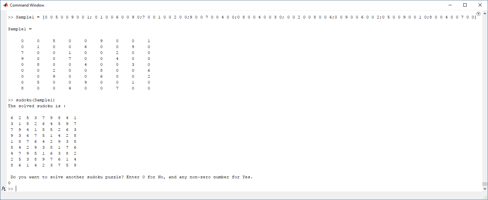

Sudoku Solver
This is a MATLAB® program designed to solve sudoku puzzles of the 9x9 kind using a brute force algorithm called backtracking. This html documentation has been generated using MATLAB®'s publishing feature. Text highlighted in green within code snippets are comments. The code snippets here, combined together, form the complete program.
This program is free software: you can redistribute it and/or modify it under the terms of the GNU General Public License as published by the Free Software Foundation, either version 3 of the License, or (at your option) any later version. This program is distributed in the hope that it will be useful, but WITHOUT ANY WARRANTY; without even the implied warranty of MERCHANTABILITY or FITNESS FOR A PARTICULAR PURPOSE. See the GNU General Public License in the LICENSE.md file for more details. If the LICENSE file is missing, see http://www.gnu.org/licenses/.
This program has been written in MATLAB® R2015a, MATLAB® R2016a, and MATLAB® Online (R2017a at the time of writing). As a result, it has been tested to run on these versions of MATLAB®. It should run on newer versions and might run on versions a few years old, but this is just an assumption that hasn't been tested.
This code requires MATLAB® to run. You need to have MATLAB® installed on your system to run this program. Alternatively, you can use MATLAB® Online to run this program which is just MATLAB® running on the cloud. To run this program using MATLAB® Online, upload the 'sudoku.m' file to your MATLAB® Online's working directory and click on the 'Run' button in the EDITOR tab. If you have MATLAB® R2015a or later installed on your system, open the source file in MATLAB® and click on the 'Run' button from the EDITOR tab. In both the cases, the code will run without any arguments and ask the user for the input Sudoku puzzle before proceeding.

If the user already has 9x9 matrices of Sudoku puzzles in the workspace, then typing 'sudoku(Sample1)' in the command window will run the program where 'Sample1' is an example input matrix.

The following sections of this webpage contain the documented code for the easy understanding of anyone who wishes to reuse this code in part or full. This, along with the README.md and LICENSE.md file, form the complete documentation for this project.
Contents
Main Function
This is the main function that gets executed first when the program is run. Typing "sudoku" in the MATLAB® command window will run the program without any arguments and the program will ask the user to enter a 9x9 sudoku matrix as the input argument. Alternatively, the user can call the program with the 9x9 grid as an argument.
function sudoku(X) % When run without any arguments, the programs will prompt the user to % input the Sudoku puzzle. if ~nargin X = input([' Sudoku Solver\n Copyright(C) 2017 Kanan '... 'Gupta & Sk Zafar Ali\n \n' ... ' This program comes with ABSOLUTELY NO WARRANTY; \n' ... ' This is free software under the GNU GPLv3 license'... ' and you are welcome to\n redistribute it' ... ' under certain conditions.\n For more information, read the'... ' LICENSE and README files. \n \n' ... ' Please input the sudoku puzzle as a 9x9 matrix of '... 'integers 1 to 9, and 0 for blank spaces.\n Each entry in'... ' each row should be an integer from 0 to 9, separated by a '... 'space.\n Each row should be separated by a semicolon (;). The'... ' input should be enclosed in square brackets [ ].\n For example,'... ' a 3x3 matrix would be written like this: [1 2 3;4 5 6;7 8 9].\n ']) end % The 9x9 matrix is tested for validity before the solver is run. [valid,invalid]=valid_sudoku(X); if ~valid fprintf(invalid) sudoku end % Once the matrix is determined to be valid, then the solver is called. If % the solver solves the sudoku, then the solution is printed. Else, the % sudoku is declared to be unsolvable. % Either way, the program asks whether the user wants to solve another % sudoku puzzle, and depending upon the input, either restarts or quits. [X,solved]=solver(X); if solved fprintf('The solved sudoku is :\n\n') fprintf([repmat(' %d ', 1,9) '\n'], X') else fprintf('The given sudoku is an unsolvable puzzle.\n') end again=input(['\n Do you want to solve another sudoku puzzle? Enter 0'... ' for No, and any non-zero number for Yes.\n']); if again sudoku end end
Solver Main Function
function [X,solved]=solver(X) [X,Xcell]=RepeatCandidates(X); if ~valid_sudoku(X) || any(any(cellfun(@isempty,Xcell))) solved=false; return %unsolvable end if any(X(:)==0) firstzero=find(X==0,1); % Finds the first position with no value assigned to it Y=X; for i=Xcell{firstzero} X=Y; X(firstzero)=i; X=solver(X); if X>0 if valid_sudoku(X) solved=true; return %solved end end end end end
Validity Check
This function checks the validity of the input 9x9 matrix and determines if it's a valid sudoku puzzle.
The funtion, by default, assumes that the input is valid and checks against some conditions. If even one of the conditions is not met, then the input is declared as invalid and the program asks the user to reenter the input matrix.
function [valid,invalid]=valid_sudoku(X) invalid=false; % The following part of the code checks if the input is a 9x9 matrix. % Input anything else and the program will tell you that the input is not % valid. if size(X)~=[9,9] invalid='The input is not a 9x9 matrix.\n'; valid=false; return; end % This part of the code checks if the 9x9 matrix contains only integers % from 0 to 9. Anything else would make the input invalid, and ask for a % reenter. if ~(fix(X)==X & X<=9 & X>=0) invalid='The input should contain only integers 0 to 9.\n' valid=false; return; end % Then the input matrix is tested for violations within the same row or % column, a violation being repetition of entries within the same row or % column. for row=1:9 if ~isequal(sort(nonzeros(X(row,1:end))),nonzeros(unique(X(row,1:end)))) invalid=sprintf('The input is an invalid puzzle. Some entries are being repeated in row %d.\n',row); valid=false; return; end end for col=1:9 if ~isequal(sort(nonzeros(X(1:end,col))),nonzeros(unique(X(1:end,col)))) invalid=sprintf('The input is an invalid puzzle. Some entries are being repeated in column %d\n.',col); valid=false; return; end end % Each 3x3 sub-grid is then tested for repetition of elements. If a % repetition has occurred, then the input is regarded as invalid. for row=1:3:7 for col=1:3:7 temp=X(row:row+2,col:col+2); if ~isequal(sort(nonzeros(temp)),nonzeros(unique(temp))) valid=false; invalid=sprintf('Some elements are being repeated in the subblock starting at the position (%d,%d)\n.',row,col); return; end end end valid=true; end
Obtain Sub-Grid for a Position
This function breaks the 9x9 input grid into 9 grids of of 3x3 each so that it becomes easy for the program to check for violation within the grid when a particular position is accessed.
More specifically, this function determines the sub-grid that a position belongs to when its row number and column number are supplied.
function block=sub_block(X,row,col) % Creates position indexes for the starting positions of sub-grids. Start % at 1, increment by 3, stop at 7. index=1:3:7; % Obtain the sub-grid's first row's number and first column's number from % the row number and column number of the position supplied. % 'ceil' function rounds the result of the division to the next integer. sub_row=index(ceil(row/3)); sub_col=index(ceil(col/3)); % Use the first row and first column to obtain the sub-grid by incrementing % twice. block=X(sub_row:sub_row+2,sub_col:sub_col+2); end
Find Possible Candidates
This function evaluates the possible candidates at a position by elimination.
function candidates=missingcandidates(X,row,col) % The first line declares an array containing the integers 1 % through 9. full = 1:9; % The second line checks what elements are present in the same row and % converts those elements to 0 in the array. The third line does the same % for the elements in the same column and the fourth repeats that for % elements in the same sub-grid. full(nonzeros(X(row,:))) = 0; full(nonzeros(X(:,col))) = 0; full(nonzeros(sub_block(X,row,col)))= 0; % The final line declares an array which contains all the non zero elements % of the array declared in the first line after the operation on the array % is complete. The function returns this array whenever called. candidates = nonzeros(full)'; end
Generate Cell Array
This function first creates a cell matrix from the input matrix. The blank places are zeroes and the filled places contain the respective digits. The cell array created is filled using the 'missing candidates' function to create a cell matrix of possibilities.
A matrix is an array of numbers - each position in a matrix can conatain only one element of a specific type, integers in this case. In contrast, a cell matrix or a cell array is a general container, which will hold any object. A cell here is used so that in every position, an array can be stored which contains the list of possible elements in that position.
function Xcell=CandidateCell(X) Xcell=num2cell(X); % Create a cell array from the matrix for col=1:9 for row=1:9 if X(row,col)==0 Xcell{row,col}=missingcandidates(X,row,col); % Call the missing candidates funtion to fill the array end end end end
Fill Singletons
This function checks the cell array for positions where only one possibility exists and then proceeds to fill these singletons.
function X=FillSingletons(X,Xcell) for col=1:9 for row=1:9 if size(Xcell{row,col},2)==1 % If only one possibility exists, X(row,col)=Xcell{row,col}; % fill it in the matrix end end end end
Repeatedly Fill Singletons
This function repeatedly calls the previous two functions, i.e. 'CandidateCell' and 'FillSingletons' as long as the matrix is changing. It stops when the matrix after attempting to fill singletons is the same as the matrix just before.
function [Xnew, XCell]=RepeatCandidates(X) XCell=CandidateCell(X); Xnew=FillSingletons(X,XCell); while abs(sum(sum(Xnew-X)))>0 X=Xnew; % Result becomes the input for the next loop XCell=CandidateCell(X); % Generate Cell Array Xnew=FillSingletons(X,XCell); % Fill Singletons end end